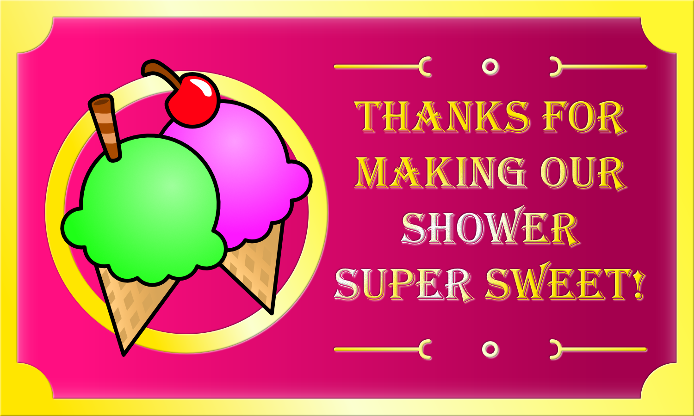
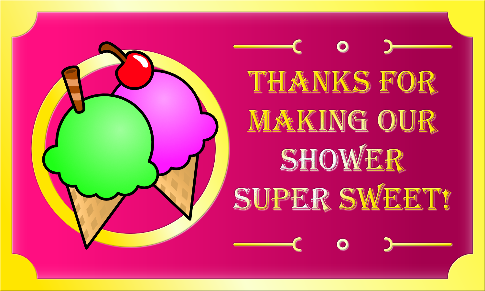

Second Post!
MARCH 30 2024 | 11:29 PM
Alright, got a second one of these up. Keeping it going! I've got a couple different things I want to write about tonight, first one long term and second kinda miscellaneous.
So Right now I'm writing these posts manually. This text isn't even in <p> tags - I'm just sending it out fresh I guess! That's probably a mistake. One I can fix later, though!
But in all seriousness, I'd like to long term make this a completely functional site like livejournal or such. The login feature to the left is currently just a placeholder but I'd like it to be functional - let me log in to make posts, and let other people log in to comment.
Right now I feel like I'm a long way from doing that from scratch, but I can always set up some practice pages to get things going in a progressive direction. I'm trying my best to be gung ho about this, keep things moving, do something impressive. Right now, I think this site is looking good so far, but as far as functionality goes, it's kind of nothing.
That's not a TERRIBLE place to be, but I can do better.
Anyway, point of business number two; Made a nice little piece of graphic design as a thank you note for our baby shower! Here's that: 
That'll find its way up to the main site eventually. I should set up a Modal viewer too; One of my very long term pipe dreams is to make a better version of Fandom wikis, and that's a good first step lol.
But for now, I've made a cute little card I can print out and, once I've made the inside, we'll get those sent out to the friends and family who're making having twins less scary than it could be! Lovely folks.
Anyway, see ya later, hope you're having a great one!
So Right now I'm writing these posts manually. This text isn't even in <p> tags - I'm just sending it out fresh I guess! That's probably a mistake. One I can fix later, though!
But in all seriousness, I'd like to long term make this a completely functional site like livejournal or such. The login feature to the left is currently just a placeholder but I'd like it to be functional - let me log in to make posts, and let other people log in to comment.
Right now I feel like I'm a long way from doing that from scratch, but I can always set up some practice pages to get things going in a progressive direction. I'm trying my best to be gung ho about this, keep things moving, do something impressive. Right now, I think this site is looking good so far, but as far as functionality goes, it's kind of nothing.
That's not a TERRIBLE place to be, but I can do better.
Anyway, point of business number two; Made a nice little piece of graphic design as a thank you note for our baby shower! Here's that: 
That'll find its way up to the main site eventually. I should set up a Modal viewer too; One of my very long term pipe dreams is to make a better version of Fandom wikis, and that's a good first step lol.
But for now, I've made a cute little card I can print out and, once I've made the inside, we'll get those sent out to the friends and family who're making having twins less scary than it could be! Lovely folks.
Anyway, see ya later, hope you're having a great one!